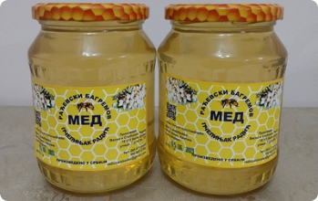
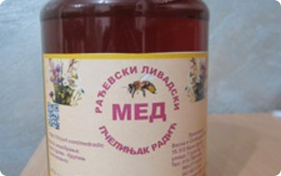
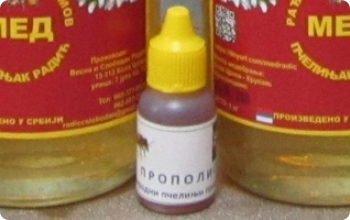
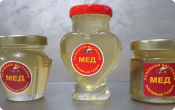
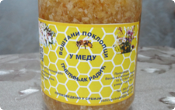

Pčelinjak Radić
Med i pčelinji proizvodi. Bela Crkva, opština Krupanj.
Proizvodi





Kontakt
- Telefon
- 062 887 2109
- radiccslobodan@gmail.com
- Lokacija
- Bela Crkva, Krupanj
Otvori na mapi (novi prozor)